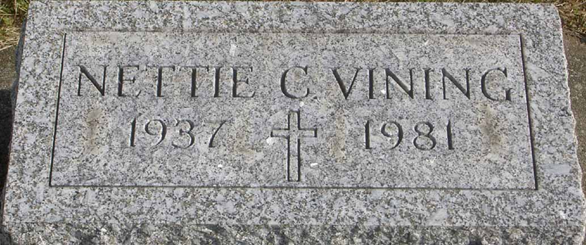
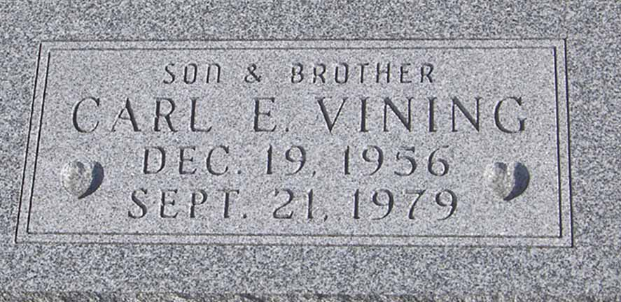

Documentation for Edward J. Vining - Nettie Charlene Bridges
Death Data
Gravestone for Nettie Charlene (Bridges) Vining, in Greenlawn Union Cemetery, Perrysville, Ashland County, Ohio (from Find A Grave):

Gravestone for Carl E. Vining, son of Edward J. Vining and Nettie Charlene (Bridges) Vining, in Greenlawn Union Cemetery, Perrysville, Ashland County, Ohio (from Find A Grave):
